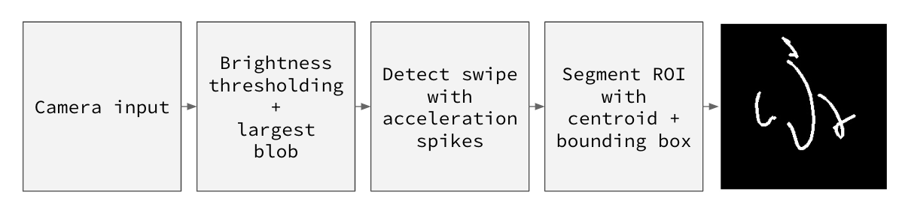
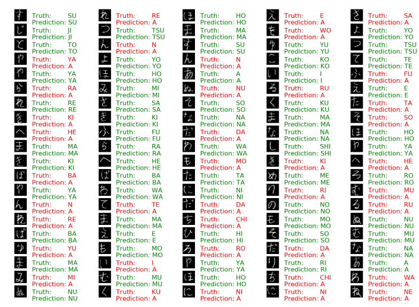
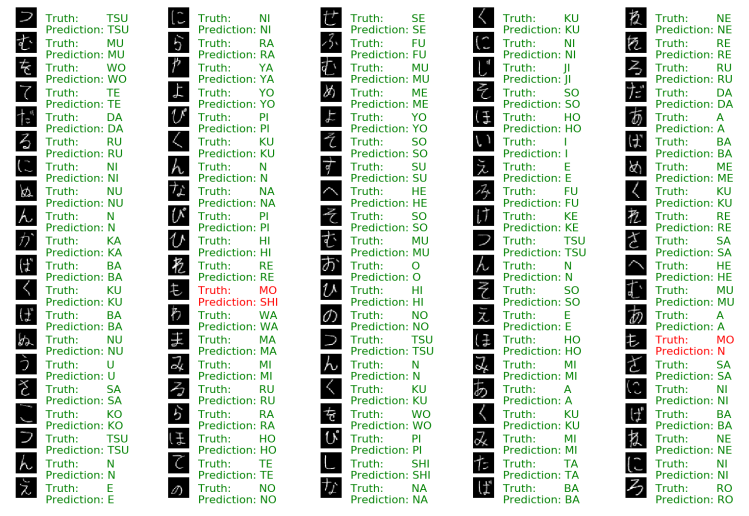
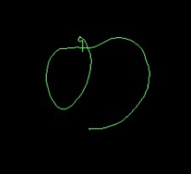
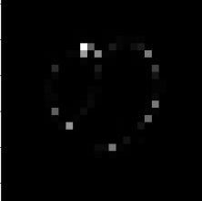
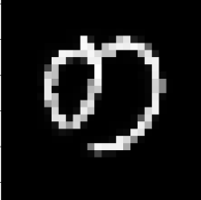
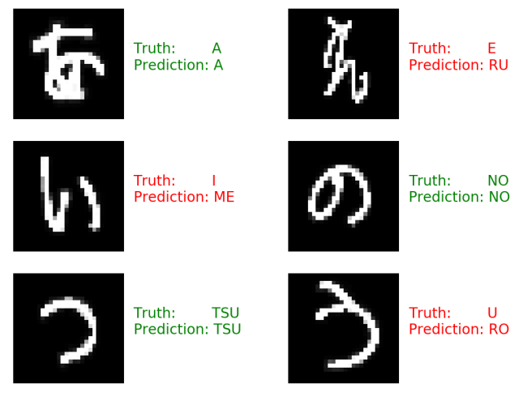

Motivation
Inspired by Google Creative Lab's projects such as Teachable Machine and Move Mirror, we hoped to make computer vision technology accessible by making it live in the browser. In this project, we decided to create a text entry interface by tracking hand movements and gesture recognition. As the capabilities of voice assistants expands rapidly, repeated voice commands can be exhausting and frustrating for users. Hence, it is worth the effort to explore alternative ways to make commands through gestures. Also, typing is typically recognized as a boring task. By introducing physical movements as alternative medium for text entry, the task is turned into a physical activity and can be a good workout for many who are occupied with work and do not have time to go to the gym.
Problem Definition
Our goal is to detect and track a light source/point in live video, trace its movement as character segments, and eventually predict the character with a neural network. We chose to explore Hiragana, the foundation of Japanese language, for the character prediction task. Most characters are highly segmented and therefore tracking the light through the air is a more challenging task.
Method and Implementation
The setup of experiment consists of a camera looking at a scene with the user holding their phone (with torch/flashlight control).
Character paths are traced only when flashlight is on. The user will perform a quick swipe gesture to left/right to represent
the completion of a character. Upon detection of swipe gesture, the image of a traced character path will be fed into the neural
network for classification.
The system consists of two components: tracking bright spot and segmentation with computer vision as well as character prediction
with machine learning.
Segmentation
The workflow of the computer vision component can be described in the following image:

The computer vision system takes in the camera input and converts it to a grayscale image. The grayscale image is then thresholded
to create a binary image. All the pixels with a brightness value below 254 are set to 0 and the rest are 1. The largest blob in
binary image is detected, and the blob's centroid is tracked to draw the character path on the canvas. To detect swipe gesture,
the system also keeps track of the position of blob in previous frame in order to get velocity and acceleration of the bright spot
in scene. Upon detection of a swipe gesture, the canvas is saved, the drawing is cleared for the next character, and the
saved canvas is displayed on a separate section of the webpage.
Although the experience is provided within the browser, we first tested it with a native OpenCV
implementation in C++, in order to make sure our algorithm works.
The porting of OpenCV C++ code to OpenCV.js was less challenging than expected. Despite the lack
of maintenance of the OpenCV.js library, we came across an OpenCV.js implementation on
CodePen and learnt how to use WebAssmebly
to get webcam input within browser.
Machine Learning
For the machine learning task, first we looked for datasets of Hiragana characters with labels to train a neural network with. We found this dataset Hiragana data which has a total 1,000 images, 50 Hiragana characters with 20 samples each. Similar to the segmentation method, we first created a local python verison of a neural network with TensorFlow. Working with TensorFlow was a learning curve, so the first version of the network we implemented was a simple Feed Forward Neural Network. We preprocessed the images by rescaling them to be 28 by 28. In the second verison of the neural network, we imporved the preprocessing by normalizing the images from grayscale values of 0 to 255 to values between 0 and 1. The accuracy of the first verison was 50% and the normalization gave an improved accuracy of 98%.
Experiments
Segmentation
Below is a visualization of the thresholding and blob detecting as well as swipe detecting results:
 |
||
| Grayscale camera input | Thresholded binary image | Canvas |
Machine Learning
Below is the results of the first and second version of the Feed Forward Neural Network:
|  |  |
| First version testing results | Second version testing results |
Next, we used images that were outputed from the segmentation algorithm. The first image we used, seen on the left, was feed into the preprocessing before the neural network and resulted in the image in the middle. This gave poor results because the line segmentations are difficult to even see. So, we added one more preprocessing step of dialtaion using a 9 by 9 kernal of 1s. The result of this is seen in the figure on the right:
|  |  |  |
| First network input | First resulting image after preprocessing | Fixed input image using dilation |
Finally, we tested our programming by first gesturing six characters in the live web video which were passed to the trained neural network and gave the following output:
|  |
| Results with output from segmentation |
Results
Our live website is available at https://project-cs585.herokuapp.com. Here is two videos demonstrating capabilities of our writing interface. We realized that writing Japanese is more time-consuming than English alphabets demo.
Discussion
- If we had more data of Japanese letters, then the model for classification would possibly improve
- Also, training the convolutional neural network under better conditions could yield better results
- Challenging to write more segmented characters in air; compare speed of English and Japanese
- Difficult to locate discontinuous strokes ; mimic transparent glass blackboard by overlaying character path on camera input
- Auto-removal of ending of character path due to swipe gesture
- Add gestures for deletion, spacing
Conclusion
This was a difficult task for us to undertake but it was is very fun as well. The future of machine learning, with the introduction of TensorFlow.js this year and with OpenCV.js, is expanding. There are many oportunities for web based computer vision tasks like this one. It is great to be a part of this change and hopefully we can obtain even better results in the future.